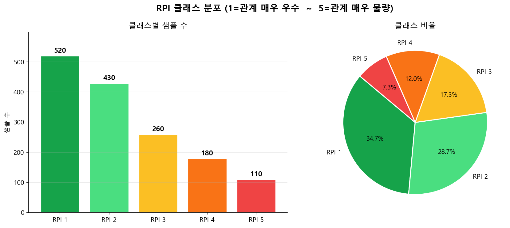
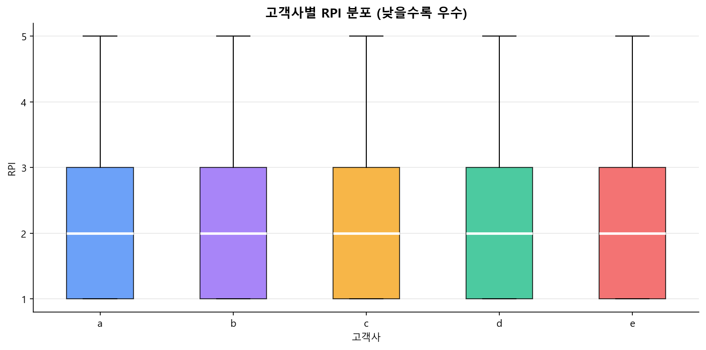
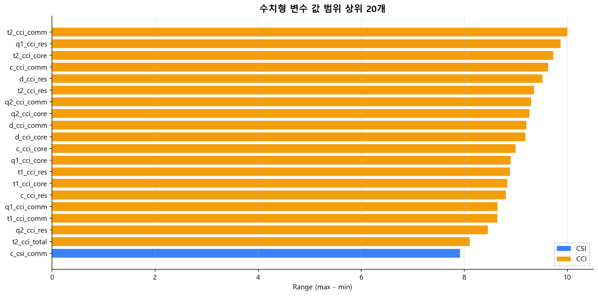
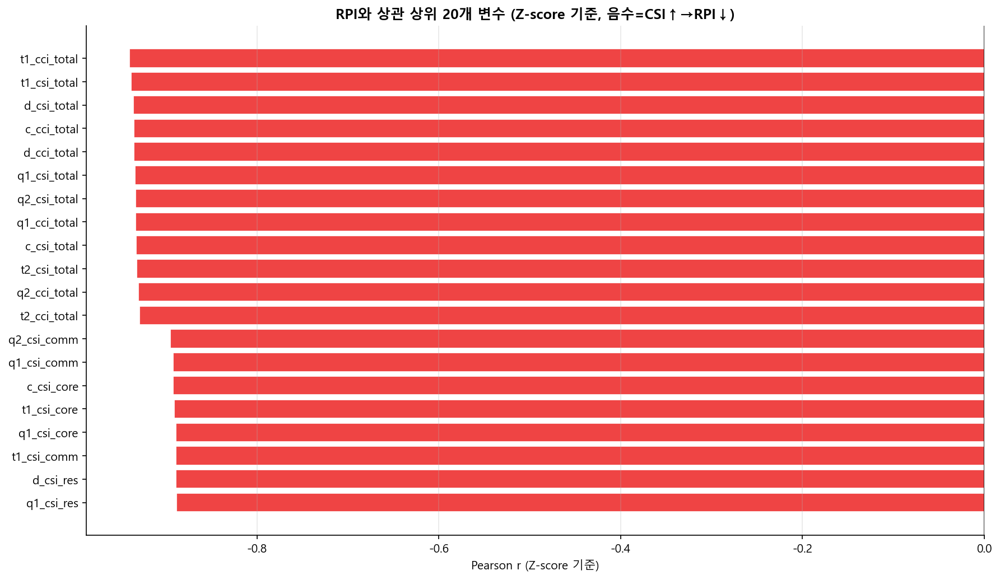
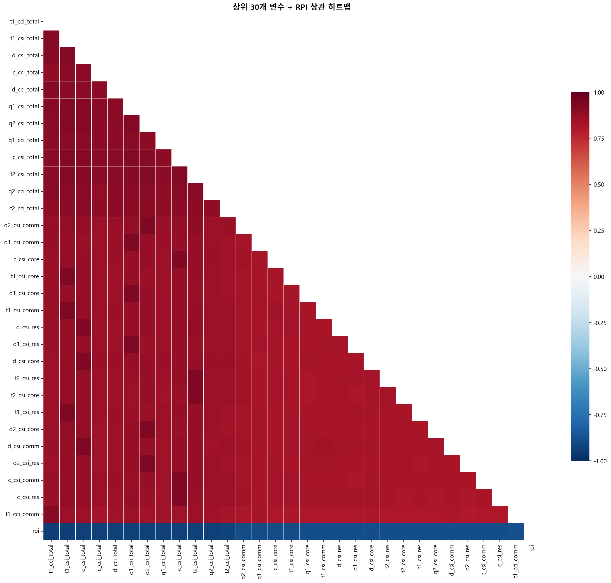
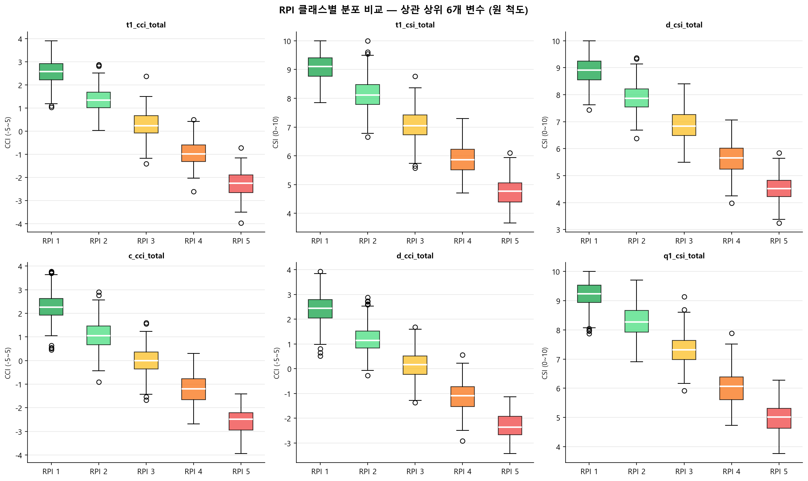

customer_satisfaction_ver2/customer_satisfaction_full_columns.xlsx | 시트: synthetic_data | 폰트: Malgun Gothic
| 변수 | 유형 | 값 범위 | 설명 |
|---|---|---|---|
year | 범주형 | 2023, 2024, 2025 | 조사 년도 |
area | 범주형 | t1, t2, d, c, q1, q2 | 평가 영역 (Touch1/2, Design, Content, Quality1/2) |
product | 범주형 | 모니터, 노트북, TV, 스마트폰, 자동차 | 제품군 |
client | 범주형 | a ~ e | 고객사명 |
rpi ★ | 타겟(서수형) | 1~5 | RPI 관계 등급 — 1: 매우 우수, 5: 매우 불량 |
*_csi_* | 수치형 | 0~10 | 고객만족지수 — 6영역 × 4항목(res/core/comm/total) = 24개 |
*_cci_* | 수치형 | −5~+5 | 고객충성지수 — 6영역 × 4항목 = 24개 |
| RPI 등급 | 의미 | 샘플 수 | 비율 | 시각 |
|---|---|---|---|---|
| 1 | 관계 매우 우수 | 520 | 34.67% | |
| 2 | 관계 우수 | 430 | 28.67% | |
| 3 | 관계 보통 | 260 | 17.33% | |
| 4 | 관계 불량 | 180 | 12.00% | |
| 5 | 관계 매우 불량 | 110 | 7.33% | |
| 합계 | 1,500 | 100% | ||

RPI 클래스 분포 — 막대 + 파이

고객사별 RPI 분포
| 항목 | 결과 |
|---|---|
| 수치형 변수 수 | 48개 (CSI 24 + CCI 24) |
| CSI 값 범위 | 0.00 ~ 10.00 |
| CCI 값 범위 | −5.00 ~ +5.00 |
| 상수형 변수 | 없음 — 모든 변수 유효 |
| 기술통계 | outputs/tables/numeric_describe_first30.csv 참고 |

수치형 변수 값 범위 상위 20개
t1_cci_total이 |r|=0.940으로 1위 — CCI(고객충성지수)도 RPI 예측에 핵심 역할을 합니다.
| 순위 | 변수 | |Pearson r| | 유형 | 해석 |
|---|---|---|---|---|
| 1 | t1_cci_total | 0.9404 | CCI | T1 전체 충성도가 RPI와 가장 강하게 연결 |
| 2 | t1_csi_total | 0.9382 | CSI | T1 전체 만족도와 관계 등급 강한 연관 |
| 3 | d_csi_total | 0.9357 | CSI | D 영역 전체 만족 |
| 4 | c_cci_total | 0.9356 | CCI | C 영역 전체 충성도 |
| 5 | d_cci_total | 0.9351 | CCI | D 영역 전체 충성도 |
| 6 | q1_csi_total | 0.9338 | CSI | Q1 영역 전체 만족 |
| 7 | q2_csi_total | 0.9335 | CSI | Q2 영역 전체 만족 |
| 8 | q1_cci_total | 0.9333 | CCI | Q1 영역 전체 충성도 |
| 9 | c_csi_total | 0.9330 | CSI | C 영역 전체 만족 |
| 10 | t2_csi_total | 0.9321 | CSI | T2 영역 전체 만족 |
| 11 | q2_cci_total | 0.9304 | CCI | Q2 영역 전체 충성도 |
| 12 | t2_cci_total | 0.9292 | CCI | T2 영역 전체 충성도 |
| 13~20위: 하위 항목(res/core/comm) CSI 변수 — |r| 0.889~0.895 | ||||

RPI와 상관 상위 20개 변수

상위 30개 변수 히트맵
| var1 | var2 | |r| |
|---|---|---|
| t1_csi_res | t1_csi_total | 0.9330 |
| t1_csi_core | t1_csi_total | 0.9344 |
| t1_csi_comm | t1_csi_total | 0.9301 |
| t1_csi_total | t1_cci_total | 0.9074 |
| t1_csi_total | t2_csi_total | 0.9194 |
| ... 총 72쌍 — outputs/tables/multicollinearity_pairs.csv 참고 | ||

RPI 상관 상위 6개 변수의 클래스별 분포 (원 척도)
| 항목 | 균형 데이터(ver4 balanced) | 원본 데이터(ver2 original) | 차이 |
|---|---|---|---|
| RPI 클래스 분포 | 균등 (각 300건) | 불균형 (520→110, 4.7:1) | 중요 차이 |
| 최고 상관 변수 | t1_csi_comm (r=0.847, CSI) | t1_cci_total (r=0.940, CCI) | CCI 부상 |
| 상위 12개 상관 변수 | 전부 CSI 계열 | CSI total 6 + CCI total 6 혼재 | 중요 차이 |
| 다중공선성 쌍 | 0쌍 | 72쌍 | 심각 |
| PCA 컴포넌트 수 (95%) | 40개 | 25개 | 원본이 더 압축 가능 |
t1_cci_total(r=0.940)이 1위입니다._total 변수입니다. res/core/comm은 13위부터 등장하며 |r|이 0.89 수준으로 낮습니다.
이는 각 영역의 종합 점수(total)가 개별 항목보다 RPI와 더 직접적으로 연결됨을 의미합니다.*_total 12개(CSI 6 + CCI 6)만으로 Feature set을 구성하면 변수 수를 51→12로 줄이면서도 핵심 예측력을 유지할 수 있습니다.
class_weight='balanced' 적용, SMOTE 등 오버샘플링, 또는 Macro 지표 중심 평가를 채택해야 합니다.
| 우선순위 | 권고 내용 | 기대 효과 |
|---|---|---|
| High | *_total 12개(CSI 6 + CCI 6)만으로 단순 모델 재실험 |
변수 51→12 축소, 다중공선성 해소, 해석력 극대화 |
| High | PCA(25 components) 파이프라인 적용 — Feature Eng 실험 최고 전략 | 다중공선성 72쌍 완전 해소, 노이즈 제거 |
| Mid | 클래스 가중치 또는 SMOTE 적용 후 Macro F1 재측정 | 소수 클래스(RPI 4~5, 관계 위험 고객사) 예측 성능 향상 |
| Low | 영역별(t1/t2/d/c/q1/q2) CSI·CCI 트렌드 시계열 분석 | 고객사 관계 악화 조기 경보 시스템 구축 |
변수명 접두사 의미: t1=신기술 / t2=개발 / c=Cost / d=공급 / q1=품질 / q2=서비스
| 영역 | CCI 상관 순위 (with RPI) |
CSI 상관 순위 (with RPI) | 데이터 분포 특성 | 주요 인사이트 |
|---|---|---|---|---|
| 신기술 (t1) | 1위 계열 | Top-5 | RPI 클래스 간 분포 가장 명확히 분리 | 미래 기술 방향성 신뢰 = 재구매 핵심 선행지표 |
| Cost (c) | 2위 계열 | Top-10 | RPI 1→5로 갈수록 CCI 뚜렷한 우하향 패턴 | 가격 불신 = 이탈 강력 신호 — 가격 투명성 정책 시급 |
| 품질 (q1) | 3위 계열 | Top-15 | 이상치 다수 — 일부 고객사 품질 불만족 집중 | 품질 이슈 고객사 집중 관리 프로그램 필요 |
| 개발 (t2) | 4위 계열 | Top-10 | t1과 높은 상관(r≥0.8) — 신기술·개발 동반 인식 | 신기술·개발 영역을 통합 R&D 파트너십으로 관리 권장 |
| 공급 (d) | 6위 계열 | 하위권 | 변동성 큼 — 납기 이슈 발생 시 급격히 낮아짐 | 납기 지연 이벤트가 CCI 급락 트리거 — 예외 관리 중요 |
| 서비스 (q2) | 9위 계열 | 하위권 | 클래스 간 분포 중첩 많음 — RPI 변별력 낮음 | 서비스 만족이 기본 기대치 수준 — 차별화 포인트 낮음 |
본 EDA에서 확인된 데이터 특성(클래스 불균형·다중공선성·시계열 구조·고객사별 편차)을 토대로 실질적 가치를 창출할 수 있는 후속 과제를 우선순위별로 제안합니다.
| 과제 | 배경 (EDA 근거) | 분석 방법 | 기대 산출물 |
|---|---|---|---|
| ① _total 12변수 전용 단순화 모델 구축 | Top 중요도 변수 8/10이 _total 계열, 세부 항목은 r≥0.9 다중공선성 72쌍 | CSI total 6개 + CCI total 6개로 모델 재학습 후 성능 비교 | 51변수 → 12변수 압축 + 해석 가능한 경량 운영 모델 |
| ② 고객사별 RPI 추세 분석 (패널 데이터) | 3개년 시계열 구조 존재, 고객사별 RPI 분포 편차 확인 | 고객사 × 연도 패널 구성 → 선형혼합모형 / 고객사 고정효과 모델 | 고객사별 RPI 변화 트렌드 리포트 + 악화 조기경보 기준 수립 |
| ③ 소수 클래스(RPI 4~5) 심층 프로파일링 | RPI 4(12.1%) + RPI 5(7.3%) = 관계 위험 고객사, 예측 어려움 | RPI 4~5 고객사 특성 탐색(어떤 CSI/CCI 패턴?) + 이진 분류(위험/정상) | 위험 고객사 조기 탐지 이진 분류기 + 특성 프로필 |
| 과제 | 배경 | 분석 방법 | 기대 산출물 |
|---|---|---|---|
| ④ CSI↔CCI 인과 구조 분석 | CSI(만족도)와 CCI(신뢰도) 간 상관이 매우 높으나 RPI에 대한 기여 방향이 다름 | 구조방정식 모형(SEM) 또는 매개효과 분석(만족→신뢰→재구매) | CSI-CCI-RPI 인과 다이어그램 + 개입 포인트 식별 |
| ⑤ 연도별(t1/t2/c/q1/q2) 측정 시점 효과 검증 | t1 CCI total이 전체 1위 — 특정 시점 측정값의 예측력이 높음 | 시점별 모델 독립 학습 → AUC 비교, 정보 감소 분석(시간 경과 효과) | 최적 측정 시점 가이드 + 불필요한 측정 주기 제거 방안 |
| ⑥ 제품군/지역 별 서브그룹 모델 비교 | product·area 변수는 모델 중요도 낮으나 그룹별 패턴 차이 가능성 | product 그룹별 분리 학습 → 성능·변수 중요도 비교 | 그룹별 맞춤 예측 모델 타당성 검토 보고서 |
| 과제 | 배경 | 분석 방법 | 기대 산출물 |
|---|---|---|---|
| ⑦ 외부 데이터 연계 분석 | 고객사의 산업 경기·실적이 RPI에 영향 가능성 (customer_intelligence_scraper 활용) | 고객사 재무/공시 데이터 크롤링 → RPI와 상관 분석 | 거시경제·고객사 실적과 RPI의 연관성 보고서 |
| ⑧ 이상치 고객사 심층 케이스 스터디 | 박스플롯에서 극단 이상치로 탐지된 고객사 존재 | 이상치 고객사 선별 → CSI/CCI 세부 항목 원인 분석 | 이상 고객사 대응 매뉴얼 + 케이스 스터디 문서 |